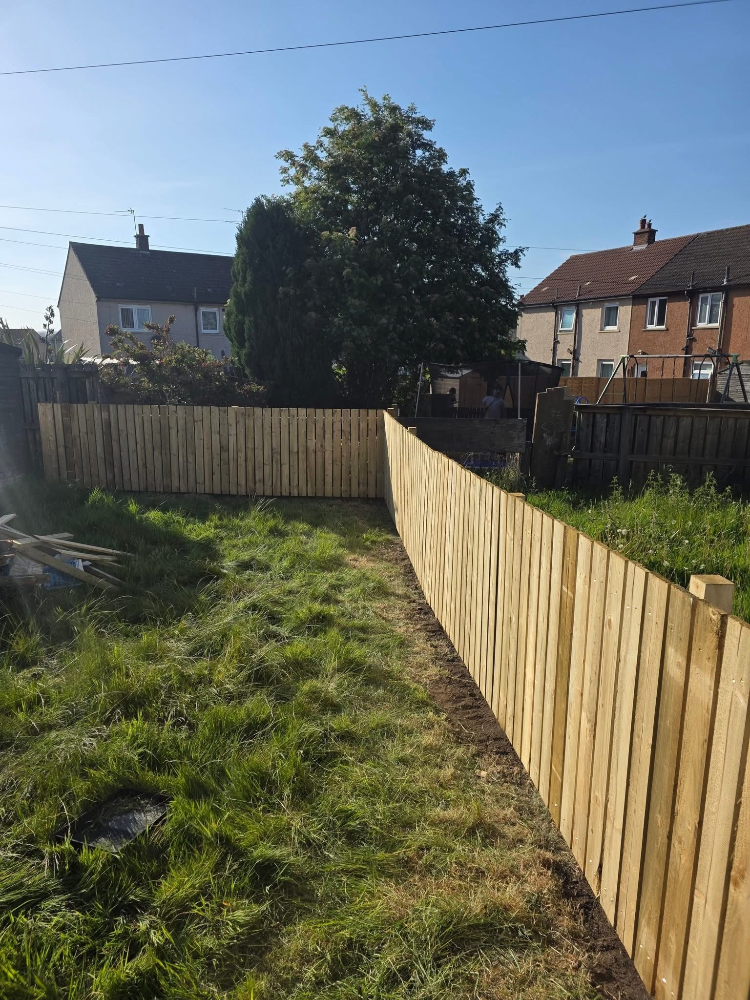
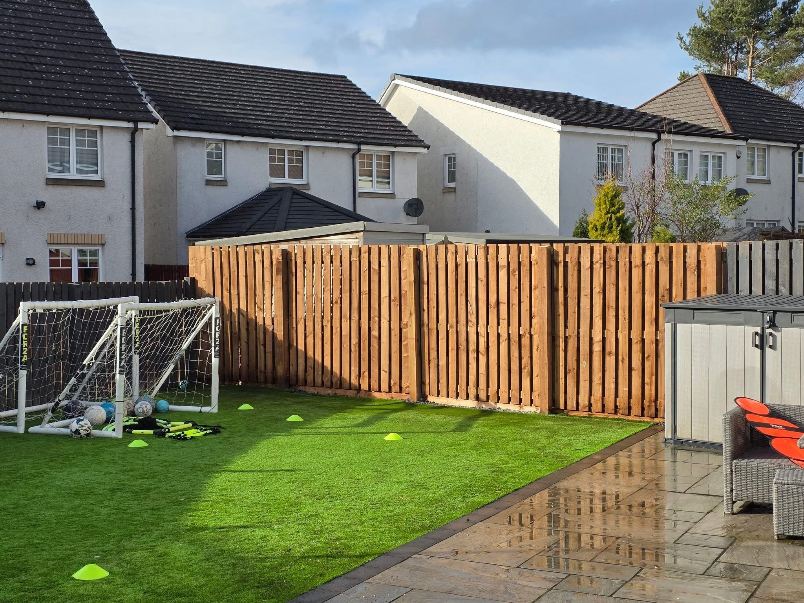

Livingston · Fencing & Decking in Livingston
Fencing & Decking in Livingston
Garden fencing and decking in Livingston from KT Contracts. Explore timber boundaries, decked areas and completed garden projects, then send an enquiry.
Fencing & Decking in Livingston
Fencing & Decking in Livingston
A garden boundary and a place to sit can make an outdoor space easier to use. KT Contracts undertakes internal and external property work in Livingston, with garden projects showing timber fencing, timber decking and decked areas beside lawn.
Explain the boundary or seating area
For fencing, tell KT Contracts which sections you want to change and whether gates or access form part of the work. For decking, describe where the area will sit and how you want to use it in relation to the house.
Consider the garden around the timber work
The project photos show fencing alongside lawn and decking beside glazed doors. Include the surrounding paths, patio and existing boundaries when you send photos so the complete layout can be discussed.
Request a quote →
Fencing & decking & Patios & surfaces
Details that change a room.
Explore flooring and bathroom projects alongside outdoor work. Send your priorities and photos to discuss the improvements you want to make.
Discuss your project →

RECENT WORK
Fencing & Decking in Livingston in pictures.
Garden fencing and decking in Livingston from KT Contracts. Explore timber boundaries, decked areas and completed garden projects, then send an enquiry.



Livingston
Livingston property maintenance.
KT Contracts is a Livingston property maintenance contractor undertaking internal and external services. Get in touch with your postcode and a description of the work to start a conversation.
Room refurbishments and garden projects in one portfolio.
Finished work and refurbishment during construction.
Call, email or prepare your enquiry on WhatsApp.
GOOD TO KNOW
Your questions answered.
Can I see fencing and decking examples?
Yes. This page includes timber boundaries, a timber deck beside the house and decked areas alongside lawn.
Can the work form part of a wider project?
KT Contracts describes a range of internal and external property maintenance services. Include the full scope when you enquire.
What should I send?
Send your postcode, the fencing or decking you have in mind and photos of the current area. The WhatsApp form prepares the main details.
REQUEST A QUOTE
Tell us what you have in mind.
Send the details of your project and its location. WhatsApp opens with your enquiry ready to send, where you can also attach photos.
KT Contracts
Ready to discuss your project?
Livingston